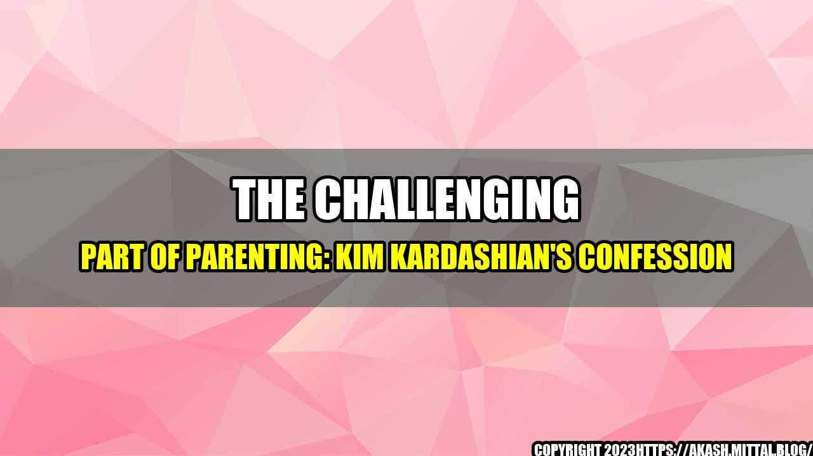

The Challenging Part of Parenting: Kim Kardashian's Confession

Parenting is one of the most rewarding experiences a person can have, but it is also one of the most challenging. Celebrity mom, Kim Kardashian, recently made headlines when she opened up about the struggles she faces while raising her four kids on social media.
Kim admitted that she often cries herself to sleep at night as a result of the pressure and stress that come with parenting. She spoke candidly about how challenging it is to balance her career, her marriage, and her role as a mother. It was a refreshing confession that resonated with thousands of other parents who struggle to keep it all together.
So what are some of the challenges that come with parenting? Let's take a look at some quantifiable examples:
- According to a study by the American Psychological Association, 60% of parents report feeling exhausted, overwhelmed, and stressed most of the time.
- Another study found that mothers who reported higher levels of stress also reported more behavior problems in their children.
- Parents of children with special needs also face unique challenges, such as managing appointments, navigating complex systems, and advocating for their child's needs.
- Lastly, parents are also worried about their child's mental health. According to a recent survey, 86% of parents reported that they were very or somewhat concerned about their child's emotional and mental well-being.
As you can see, parenting can be a lot to handle. However, it is important to remember that you are not alone. There are plenty of resources and support systems out there that can help you overcome these challenges and find balance in your life.
Here are three important points to keep in mind:
- Self-Care is Essential: You cannot pour from an empty cup. Take the time to prioritize your own physical and mental health. This can be as simple as a daily walk or as complex as therapy. Whatever it is, make sure you are taking care of yourself first.
- Lean on Your Support System: Reach out to friends, family, or a professional for help when you need it. It can be hard to ask for assistance, but it is important to remember that everyone needs help sometimes. Additionally, connecting with other parents who share similar challenges can be incredibly helpful.
- Be Kind to Yourself: Parenting is hard and no one is perfect. Remember that mistakes happen, and you are doing the best you can.
Kim Kardashian's confession sheds light on the struggles that come with parenting. It reminds us that it is okay to not have it all together and to seek help when we need it. We hope that this article has provided some practical tips to help you navigate the challenges of parenting with confidence.
Want more parenting tips and advice?
Sign up for our newsletter today!
Curated by Team Akash.Mittal.Blog
Share on Twitter Share on LinkedIn